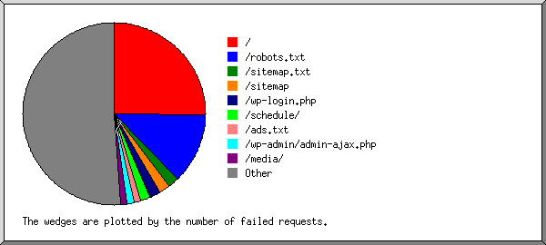

Web Server Statistics for Werbach.com Usage Statistics
Web Server Statistics for Werbach.com Usage Statistics
Program started at Sun-24-Jul-2022 00:02.
Analysed requests from Thu-23-Jun-2022 00:09 to Sat-23-Jul-2022 23:51 (30.99 days).
Web Server Statistics for Werbach.com Usage StatisticsProgram started at Sun-24-Jul-2022 00:02.
Analysed requests from Thu-23-Jun-2022 00:09 to Sat-23-Jul-2022 23:51 (30.99 days).
(Go To: Top | General Summary | Monthly Report | Daily Report | Daily Summary | Host Report | Referrer Report | Directory Report | Failure Report | Request Report)
This report contains overall statistics.
Figures in parentheses refer to the 7-day period ending 24-Jul-2022 00:02.
Successful requests: 253 (16)
Average successful requests per day: 8 (2)
Failed requests: 2,766 (886)
Redirected requests: 25 (1)
Distinct files requested: 80 (15)
Distinct hosts served: 30 (7)
Data transferred: 4.90 megabytes (802.28 kilobytes)
Average data transferred per day: 161.88 kilobytes (114.61 kilobytes)
(Go To: Top | General Summary | Monthly Report | Daily Report | Daily Summary | Host Report | Referrer Report | Directory Report | Failure Report | Request Report)
This report lists the activity in each month.
Each unit ( ) represents 1 request for a page.
) represents 1 request for a page.
| month | reqs | pages | |
|---|---|---|---|
| Jun 2022 | 42 | 0 | |
| Jul 2022 | 211 | 0 |
Busiest month: Jun 2022 (0 requests for pages).
(Go To: Top | General Summary | Monthly Report | Daily Report | Daily Summary | Host Report | Referrer Report | Directory Report | Failure Report | Request Report)
This report lists the activity in each day.
Each unit () represents 1 request for a page.
| date | reqs | pages | |
|---|---|---|---|
| 23/Jun/22 | 4 | 0 | |
| 24/Jun/22 | 12 | 0 | |
| 25/Jun/22 | 2 | 0 | |
| 26/Jun/22 | 1 | 0 | |
| 27/Jun/22 | 0 | 0 | |
| 28/Jun/22 | 0 | 0 | |
| 29/Jun/22 | 11 | 0 | |
| 30/Jun/22 | 12 | 0 | |
| 1/Jul/22 | 0 | 0 | |
| 2/Jul/22 | 1 | 0 | |
| 3/Jul/22 | 2 | 0 | |
| 4/Jul/22 | 2 | 0 | |
| 5/Jul/22 | 1 | 0 | |
| 6/Jul/22 | 6 | 0 | |
| 7/Jul/22 | 6 | 0 | |
| 8/Jul/22 | 4 | 0 | |
| 9/Jul/22 | 0 | 0 | |
| 10/Jul/22 | 1 | 0 | |
| 11/Jul/22 | 161 | 0 | |
| 12/Jul/22 | 1 | 0 | |
| 13/Jul/22 | 3 | 0 | |
| 14/Jul/22 | 4 | 0 | |
| 15/Jul/22 | 2 | 0 | |
| 16/Jul/22 | 1 | 0 | |
| 17/Jul/22 | 2 | 0 | |
| 18/Jul/22 | 7 | 0 | |
| 19/Jul/22 | 1 | 0 | |
| 20/Jul/22 | 2 | 0 | |
| 21/Jul/22 | 2 | 0 | |
| 22/Jul/22 | 1 | 0 | |
| 23/Jul/22 | 1 | 0 |
Busiest day: 23/Jun/22 (0 requests for pages).
(Go To: Top | General Summary | Monthly Report | Daily Report | Daily Summary | Host Report | Referrer Report | Directory Report | Failure Report | Request Report)
This report lists the total activity for each day of the week, summed over all the weeks in the report.
Each unit () represents 1 request for a page.
| day | reqs | pages | |
|---|---|---|---|
| Sun | 6 | 0 | |
| Mon | 170 | 0 | |
| Tue | 3 | 0 | |
| Wed | 22 | 0 | |
| Thu | 28 | 0 | |
| Fri | 19 | 0 | |
| Sat | 5 | 0 |
(Go To: Top | General Summary | Monthly Report | Daily Report | Daily Summary | Host Report | Referrer Report | Directory Report | Failure Report | Request Report)
This report lists the computers which requested files.

Listing hosts, sorted alphabetically.
| reqs | %bytes | host |
|---|---|---|
| 1 | 142.93.48.245 | |
| 1 | 159.65.101.238 | |
| 8 | 0.24% | 165.22.111.186 |
| 14 | 0.18% | 193.142.58.22 |
| 2 | 8.13% | 211-73-81-150.twcc.ai |
| 122 | 1.37% | ec2-13-53-132-34.eu-north-1.compute.amazonaws.com |
| 1 | 0.01% | crawling-gateway-136-243-220-210.dataforseo.com |
| 1 | 248.62.197.35.bc.googleusercontent.com | |
| 3 | 8.86% | msnbot-207-46-13-183.search.msn.com |
| 2 | 25.92% | msnbot-40-77-167-56.search.msn.com |
| 1 | 12.96% | msnbot-40-77-167-64.search.msn.com |
| 1 | server.ospreyuw.com | |
| 77 | 0.24% | supernovahub.com |
| 2 | 0.01% | mail3.televoxsites.com |
| 1 | 0.03% | 213-180-203-89.spider.yandex.com |
| 1 | 0.19% | 77-88-5-166.spider.yandex.com |
| 1 | 0.15% | 77-88-5-22.spider.yandex.com |
| 1 | 0.03% | 93-158-161-56.spider.yandex.com |
| 1 | 0.01% | static.181.194.201.138.clients.your-server.de |
| 1 | ip31.ip-213-32-102.eu | |
| 1 | 62-210-215-74.rev.poneytelecom.eu | |
| 1 | 12.96% | p860053-ipngn9301hodogaya.kanagawa.ocn.ne.jp |
| 1 | 0.91% | fwdproxy-cln-007.fbsv.net |
| 1 | customer-static-69-236-71.iplannetworks.net | |
| 1 | 0.01% | crawlga56.1and1.org |
| 1 | 12.96% | fetcher3-1.go.mail.ru |
| 1 | 12.96% | fetcher3-3.go.mail.ru |
| 2 | 1.82% | fetcher3-5.go.mail.ru |
| 1 | 0.01% | fetcher8-3.go.mail.ru |
| 1 | 0.01% | fetcher8-5.go.mail.ru |
(Go To: Top | General Summary | Monthly Report | Daily Report | Daily Summary | Host Report | Referrer Report | Directory Report | Failure Report | Request Report)
This report lists the referrers (where people followed links from, or pages which included this site's images).
Listing referring URLs with at least 20 requests, sorted by the number of requests.
| reqs | URL |
|---|---|
| 69 | http://digitaltornado.net/blog/wp-cron.php |
(Go To: Top | General Summary | Monthly Report | Daily Report | Daily Summary | Host Report | Referrer Report | Directory Report | Failure Report | Request Report)
This report lists the directories from which files were requested. (The figures for each directory include all of its subdirectories.)

Listing directories with at least 0.01% of the traffic, sorted by the amount of traffic.
| reqs | %bytes | directory |
|---|---|---|
| 248 | 99.94% | /blog/ |
| 5 | 0.06% | [root directory] |
(Go To: Top | General Summary | Monthly Report | Daily Report | Daily Summary | Host Report | Referrer Report | Directory Report | Failure Report | Request Report)
This report lists the files that caused failures, for example files not found.

Listing the top 30 files by the number of failed requests, sorted by the number of failed requests.
| reqs | file |
|---|---|
| 699 | / |
| 345 | /robots.txt |
| 54 | /sitemap.txt |
| 54 | /sitemap |
| 50 | /wp-login.php |
| 28 | /wp-login.php?action=register |
| 47 | /schedule/ |
| 36 | /ads.txt |
| 33 | /wp-admin/admin-ajax.php |
| 16 | /wp-admin/admin-ajax.php?action=uploadFontIcon |
| 32 | /media/ |
| 21 | /speakers/ |
| 21 | /.env |
| 17 | /wp-content/plugins/ioptimization/IOptimize.php |
| 17 | /wp-content/plugins/ioptimization/IOptimize.php?rchk |
| 16 | /wp-content/plugins/wp-engine-module/wp-engine.php |
| 16 | /wp-content/plugins/ioptimizations/IOptimizes.php |
| 16 | /wp-content/plugins/ioptimizations/IOptimizes.php?hamlorszd |
| 15 | /about/ |
| 15 | /feed/ |
| 13 | /wp-content/plugins/dzs-zoomsounds/savepng.php |
| 12 | /wp-content/plugins/dzs-zoomsounds/savepng.php?location=a57bze8931.php |
| 13 | /favicon.ico |
| 12 | /wp-content/plugins/dzs-zoomsounds/a57bze8931.php |
| 12 | /wp-content/plugins/ioptimization/a57bze8931.php |
| 12 | /wp-content/plugins/ioptimizations/a57bze8931.php |
| 12 | /wp-content/plugins/wp-engine-module/a57bze8931.php |
| 11 | /old-index.php |
| 10 | /wp-load.php |
| 9 | /.git/config |
| 9 | /2017/08/12/hello-world/ |
| 9 | /.well-known/ |
| 8 | /wp-content/plugins/arforms/js/filedrag/upload.php |
| 8 | /wp-content/uploads/arforms/a57bze8931.txt |
| 8 | /wp-admin/css/ |
| 1149 | [not listed: 611 files] |
(Go To: Top | General Summary | Monthly Report | Daily Report | Daily Summary | Host Report | Referrer Report | Directory Report | Failure Report | Request Report)
This report lists the files on the site.

Listing files with at least 20 requests, sorted by the number of requests.
| reqs | %bytes | last time | file |
|---|---|---|---|
| 139 | 1.55% | 11/Jul/22 16:17 | /blog/xmlrpc.php |
| 69 | 0.20% | 22/Jul/22 19:31 | /blog/wp-cron.php |
| 45 | 98.25% | 23/Jul/22 23:51 | [not listed: 14 files] |